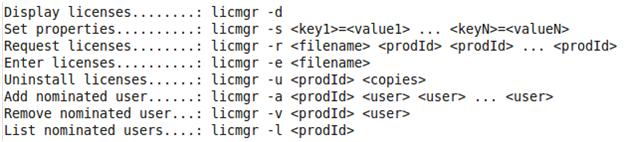

This document helps you to set up a GXflow Application (that runs on Linux) to use licenses from a GeneXus Protection Server (that runs on Windows). As stated in this document, this protection method is used primarily for prototyping purposes; for production purposes a Native protection method is the most (or only) suitable. Warning: If you are in GeneXus 15 Upgrade 7 or lower, read How to configure GXflow running in Linux using licenses from a Windows server (X Evolution 3).
So to configure a GXflow Application that runs in Linux to use the protection system from a Windows server, follow these steps: Step 1 – Install GeneXus Protection ServerInstall the latest GeneXus Protection Server version on a Windows Server. This server will centralize GeneXus licenses products. Step 2 – Configure the GeneXus License ManagerDownload the files from here. To set the Protection Server location, execute the following: java -Dgxprotect.dir=/gxprot/license –jar licmgr.jar -s server.host=localhost user.domain=localhost user.id=test user.pwd=test123 where:
You don't need to set all properties at once; you can execute the same command several times with different parameters. The specified user to access the server must have security permissions to access the server via DCOM. Step 3 – Configure the application to use the Windows Protection ServerOpen GXflow license manager and configure the Remote location settings. Annex I – License Manager OptionsWhenever you run the License Manager you must reference a System Property as a parameter, for example: java –Dgxprotect.dir=”gxprot” –jar licmgr.jar It is recommended to explicitly set the directory that will be used to save the properties file. When using the license manager it is advisable to use a system property "gxprotect.dir". License Manager available options are: 
|
| Backlinks |
| Toc:GeneXus BPM Suite |
| HowTo: Deploying a Workflow-based Application |